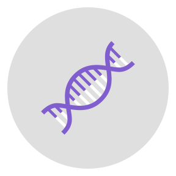

<mat-sidenav-container class="sidenav-container">
  <mat-sidenav #drawer class="sidenav" fixedInViewport
      [attr.role]="(isHandset$ | async) ? 'dialog' : 'navigation'"
      [mode]="(isHandset$ | async) ? 'over' : 'side'"
      [opened]="(isHandset$ | async) === false"
      [ngClass]="{hidden:!(isHandset$ | async)}" >
      <mat-toolbar>Мени</mat-toolbar>
    <mat-nav-list>
      <a mat-list-item routerLink="/guideRNA">Дизајн на водечка RNA</a>
      <a mat-list-item routerLink="crispr">CRISPR симулација</a>
      <a mat-list-item routerLink="about">Помош</a>
    </mat-nav-list>
  </mat-sidenav>
  <mat-sidenav-content>
    <mat-toolbar color="primary">
      <button
        type="button"
        aria-label="Toggle sidenav"
        mat-icon-button
        (click)="drawer.toggle()"
        *ngIf="isHandset$ | async">
        <mat-icon aria-label="Side nav toggle icon">menu</mat-icon>
      </button>
      <a routerLink="crispr"></a>
      <span class="spacer"></span>
      <div [ngClass]="{hidden:(isHandset$ | async)}">
      <a routerLink="crispr">CRISPR таргет</a>
      <a  routerLink="/guideRNA">Водечка RNA</a>
      <a  routerLink="about">Помош</a>
    </div>
    </mat-toolbar>
    <!-- Add Content Here -->
  </mat-sidenav-content>
</mat-sidenav-container>
